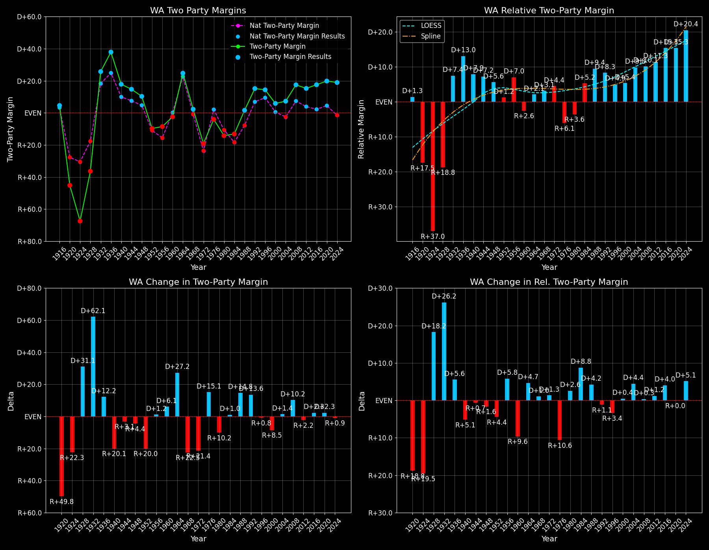

Washington (WA) — Statewide

Margins · 3P share · Pres. deltas

Relative margins · Relative 3P · Rel. deltas
Washington (WA) — Total Data
| Year | EVs | D | R | Margin | Rel. Margin | Nat. Margin | Margin Δ | Rel. Margin Δ | Nat. Margin Δ | Total votes |
|---|---|---|---|---|---|---|---|---|---|---|
| 1968 | 9 | 600,683(47.6%) | 567,029(44.9%) | D+2.7 | D+3.3 | R+0.6 | 1,262,118 | |||
| 1972 | 9 | 568,039(40.4%) | 836,901(59.6%) | R+19.1 | D+4.4 | R+23.5 | R+21.8 | D+1.1 | R+23.0 | 1,404,940 |
| 1976 | 9 | 717,313(48.0%) | 777,707(52.0%) | R+4.0 | R+6.2 | D+2.2 | D+15.1 | R+10.6 | D+25.7 | 1,495,020 |
| 1980 | 9 | 650,193(38.2%) | 865,244(50.9%) | R+12.6 | R+2.7 | R+9.9 | R+8.6 | D+3.5 | R+12.1 | 1,700,510 |
| 1984 | 10 | 807,352(43.4%) | 1,051,670(56.6%) | R+13.1 | D+5.0 | R+18.1 | R+0.5 | D+7.7 | R+8.2 | 1,859,022 |
| 1988 | 10 | 933,516(50.8%) | 903,835(49.2%) | D+1.6 | D+9.4 | R+7.7 | D+14.8 | D+4.4 | D+10.4 | 1,837,351 |
| 1992 | 11 | 993,037(43.8%) | 731,234(32.3%) | D+11.6 | D+6.0 | D+5.6 | D+9.9 | R+3.4 | D+13.3 | 2,266,051 |
| 1996 | 11 | 1,123,323(49.8%) | 840,712(37.3%) | D+12.5 | D+4.0 | D+8.6 | D+1.0 | R+2.0 | D+3.0 | 2,255,503 |
| 2000 | 11 | 1,247,652(50.2%) | 1,108,864(44.6%) | D+5.6 | D+5.1 | D+0.5 | R+6.9 | D+1.1 | R+8.0 | 2,484,739 |
| 2004 | 11 | 1,510,183(52.8%) | 1,304,880(45.6%) | D+7.2 | D+9.6 | R+2.5 | D+1.6 | D+4.6 | R+3.0 | 2,861,681 |
| 2008 | 11 | 1,750,644(57.7%) | 1,229,086(40.5%) | D+17.2 | D+9.9 | D+7.3 | D+10.0 | D+0.3 | D+9.7 | 3,036,522 |
| 2012 | 12 | 1,755,396(56.2%) | 1,290,670(41.3%) | D+14.9 | D+11.0 | D+3.9 | R+2.3 | D+1.1 | R+3.4 | 3,125,516 |
| 2016 | 12 | 1,742,718(52.6%) | 1,221,747(36.9%) | D+15.7 | D+13.6 | D+2.1 | D+0.8 | D+2.6 | R+1.8 | 3,314,905 |
| 2020 | 12 | 2,369,612(58.0%) | 1,584,651(38.8%) | D+19.2 | D+14.8 | D+4.4 | D+3.5 | D+1.1 | D+2.3 | 4,087,631 |
| 2024 | 12 | 2,245,849(57.2%) | 1,530,923(39.0%) | D+18.2 | D+19.8 | R+1.5 | R+1.0 | D+5.0 | R+6.0 | 3,924,243 |
Column explanations
- Year
- Election year.
- EVs
- Number of electoral votes allocated to this state or unit.
- D
- Number of votes for the Democratic candidate (raw count(pct%)).
- R
- Number of votes for the Republican candidate (raw count(pct%)).
- Margin
- Margin between the two major-party candidates, including third-party votes ((D - R)/total).
- Rel. Margin
- The presidential margin relative to the national presidential margin (Margin - Nat. Margin).
- Nat. Margin
- The national presidential margin for that year, including third-party votes ((D_total - R_total)/total_votes).
- Δ
- Change (delta) in the value from the previous election year. Blank if no data for previous year.
- Total votes
- Total voter turnout or ballots cast (when provided).
Washington (WA) — Third-Party Data
| Year | Other votes | 3P Share | 3P Nat. Share | 3P Rel. Share |
|---|---|---|---|---|
| 1968 | 94,406(7.5%) | T+7.5 | T+13.6 | T-6.1 |
| 1972 | 0(0.0%) | T+0.1 | T-0.1 | |
| 1976 | 0(0.0%) | T+0.3 | T-0.3 | |
| 1980 | 185,073(10.9%) | T+10.9 | T+7.0 | T+3.9 |
| 1984 | 0(0.0%) | T+0.1 | T-0.1 | |
| 1988 | 0(0.0%) | T+0.2 | T-0.2 | |
| 1992 | 541,780(23.9%) | T+23.9 | T+19.2 | T+4.7 |
| 1996 | 291,468(12.9%) | T+12.9 | T+9.7 | T+3.2 |
| 2000 | 128,223(5.2%) | T+5.2 | T+3.7 | T+1.5 |
| 2004 | 46,618(1.6%) | T+1.6 | T+0.8 | T+0.8 |
| 2008 | 56,792(1.9%) | T+1.9 | T+1.4 | T+0.5 |
| 2012 | 79,450(2.5%) | T+2.5 | T+1.6 | T+0.9 |
| 2016 | 350,440(10.6%) | T+10.6 | T+5.5 | T+5.0 |
| 2020 | 133,368(3.3%) | T+3.3 | T+1.8 | T+1.4 |
| 2024 | 147,471(3.8%) | T+3.8 | T+1.9 | T+1.9 |
Column explanations
- Year
- Election year.
- Other votes
- Number of votes for third-party (other) candidates (raw count(pct%)).
- 3P Share
- Share of the vote received by third-party (other) candidates.
- 3P Nat. Share
- The national third-party share for that year (3P votes / total votes).
- 3P Rel. Share
- Third-party share relative to the national third-party share (3P share - Nat. 3P share).

Two-party margins · relative · deltas
Washington (WA) — Two-Party Data
| Year | 2-Party Margin | 2-Party Nat. Margin | 2-Party Rel. Margin | 2-Party Margin Δ | 2-Party Nat. Margin Δ | 2-Party Rel. Margin Δ |
|---|---|---|---|---|---|---|
| 1968 | D+2.9 | R+0.7 | D+3.6 | |||
| 1972 | R+19.1 | R+23.6 | D+4.4 | R+22.0 | R+22.9 | D+0.9 |
| 1976 | R+4.0 | D+2.2 | R+6.2 | D+15.1 | D+25.8 | R+10.7 |
| 1980 | R+14.2 | R+10.6 | R+3.6 | R+10.2 | R+12.8 | D+2.7 |
| 1984 | R+13.1 | R+18.1 | D+5.0 | D+1.0 | R+7.5 | D+8.5 |
| 1988 | D+1.6 | R+7.8 | D+9.4 | D+14.8 | D+10.4 | D+4.4 |
| 1992 | D+15.2 | D+6.9 | D+8.3 | D+13.6 | D+14.7 | R+1.1 |
| 1996 | D+14.4 | D+9.5 | D+4.9 | R+0.8 | D+2.6 | R+3.3 |
| 2000 | D+5.9 | D+0.5 | D+5.4 | R+8.5 | R+8.9 | D+0.4 |
| 2004 | D+7.3 | R+2.5 | D+9.8 | D+1.4 | R+3.0 | D+4.4 |
| 2008 | D+17.5 | D+7.4 | D+10.1 | D+10.2 | D+9.8 | D+0.4 |
| 2012 | D+15.3 | D+3.9 | D+11.3 | R+2.2 | R+3.4 | D+1.2 |
| 2016 | D+17.6 | D+2.2 | D+15.3 | D+2.3 | R+1.7 | D+4.0 |
| 2020 | D+19.9 | D+4.5 | D+15.3 | D+2.3 | D+2.3 | R+0.0 |
| 2024 | D+18.9 | R+1.6 | D+20.5 | R+0.9 | R+6.1 | D+5.2 |
Column explanations
- Year
- Election year.
- 2-Party Margin
- Margin between the two major-party candidates, ignoring third-party votes ((D - R)/(D + R)).
- 2-Party Nat. Margin
- The national presidential margin for that year, including third-party votes ((D_total - R_total)/total_votes).
- 2-Party Rel. Margin
- The presidential margin relative to the national presidential margin (Margin - Nat. Margin).
- Δ
- Change (delta) in the value from the previous election year. Blank if no data for previous year.